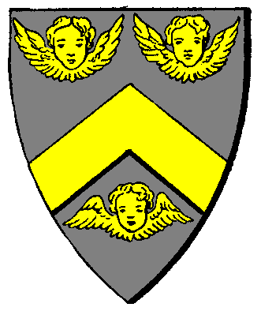

| Übersicht,
Anschläge und Stammtisch (RPG) |
|
Vanessa Aquila, 3 Kilo, 53,1 cm
|
Stryke
  |
auch von mir natürlich beste glückwünsche
Stryke
Zur 14. Stunde am 3.Dunkelfrost im Jahre 416 |
15.07.04 20:25
 |
|
| Enlygiel Nethènyl (RIP) |
Welch niedliches Geschöpf Eure Tochter ist.
*lächelnd das Bild betrachtet*
Enlygiel Nethènyl
Zur 14. Stunde am 3.Dunkelfrost im Jahre 416 |
15.07.04 20:26
|
|
Custos von Dignitas
 |
Auch ich möchte dem Hause Aquila gratulieren! Alles Gute für Euer Kind, möge Urvan es schützen!
Custos von Dignitas,
Sprecher der Nation CoL
Zur 15. Stunde am 3.Dunkelfrost im Jahre 416 |
15.07.04 20:32
|
|
| Niala (RIP) |
Auch von mir die besten Wünsche und alles Gute für die junge Familie
Niala
Zur 17. Stunde am 3.Dunkelfrost im Jahre 416 |
15.07.04 21:05
|
|
| Izumi Séregon (RIP) |
Gratulation Eni *ggggggg*
Sir AnubisKrieger,
Vorsteher von Tempelstadt
Zur 17. Stunde am 3.Dunkelfrost im Jahre 416 |
15.07.04 21:07
|
|
| Aerandir Séregon (RIP) |
Herzlichen Glückwunsch der zu dem Familienzuwachs *gg*
Tigerclaw,
Priester im Dienste des einzig wahren Glaubens an Urvan
Zur 21. Stunde am 3.Dunkelfrost im Jahre 416 |
15.07.04 22:00
|
|
| Shaakraal (RIP) |
Gratulation Enigma und Vincent. Hoffe euer Kind wächst wohlbehütet auf.
Sir Shaakraal,
Vorsteher von Amrodia,
Wirtschaftsbeauftragter und Ratsmitglied des CoL
Zur 21. Stunde am 3.Dunkelfrost im Jahre 416 |
15.07.04 22:01
|
|
Dubliner
  |
Meinen herzlichsten Glückwunsch zu Eurer lieben Vanessa.
Glück und Erfolg soll Eure Familie immer begleiten !
Lady Dubliner
Zur 12. Stunde am 4.Dunkelfrost im Jahre 416 |
16.07.04 1:28
|
|
| Amadeo di Lucca (RIP) |
Eine Rose die nicht auf Stein, noch unter Dornen wächst, wird wunderschön.
Wendarias Segen mit euch!
Amadeo di Lucca
Zur 13. Stunde am 4.Dunkelfrost im Jahre 416 |
16.07.04 1:45
|
|
| Chimäera Taronshield (RIP) |
Herzlichste Glückwünsche auch von mir und Norion an das neue Elternpaar. Wir wünschen Vanessa einen schönen Lebensweg und vor allem immer Gesundheit und Glück! ;)
Chimäera Taronshield
Zur 16. Stunde am 4.Dunkelfrost im Jahre 416 |
16.07.04 2:27
|
|
| Fantaghiro (RIP) |
Auch von mir die besten Wünsche zur Geburt der Tochter, werte Familie Aquila
Fantaghiro
Zur 3. Stunde am 7.Dunkelfrost im Jahre 416 |
16.07.04 16:20
|
|
Runandriel Darkness
 |
Herzlichen Glückwunsch!
Mögen Eltern und Kind wohlauf sein und bleiben :)
Mit erfreuten Grüßen
Runandriel Darkness
Zur 10. Stunde am 7.Dunkelfrost im Jahre 416 |
16.07.04 18:09
|
|
| Wooti Sikaryan (RIP) |
auch von mir mal alles gute an mutter, vater und den neuankömmling ....
Sir Wooti Sikaryan,
Smutje auf dem Schnellsegler "Seeschwanz"
Zur 11. Stunde am 7.Dunkelfrost im Jahre 416 |
16.07.04 18:24
|
|
| Shadera Naith (RIP) |
Ich möchte mich auch an die vielen Glückwünsche anschliessen und mich schonmal anbieten, auf Vanessa mit aufzupassen, wenn ihr dies wünscht.
Shadera Naith,
Verlobte des ehrenwerten Vivi von Dignitas
Zur 1. Stunde am 15.Dunkelfrost im Jahre 416 |
18.07.04 12:42
|
|
| Judith Tatekohomni (RIP) |
Ich wünsche Vater, Mutter und Kind auch alles Gute von ganzem Herzen.
Mögen die Sieben über Euch wachen.
Caranethiriel Nagual
Zur 5. Stunde am 16.Dunkelfrost im Jahre 416 |
18.07.04 19:08
|
|
| Sherelian (RIP) |
Na die kleine gedeit ja prächtig. Mir kam zu Ohre, dass sie sogar schon mit Pappa auf Orkjagd gehen darf ;)
((19.07.04 1:18 Sieg Vanessa Aquila hat den/die 10. Ork besiegt! ))
Baron Sherelian,
Vorsteher von Wespennest
Zur 18. Stunde am 17.Dunkelfrost im Jahre 416 |
19.07.04 3:43
|
|
| Vincent Aquila (RIP) |
Du, Sherelian, das kann Mama viel besser als ich. Ich bin doch nur ein harmloser Seefahrer.
Fürst Vincent Aquila,
Vorsteher von Wespenforst Ost,
Anführer der glorreichen Nation "Wespennest",
Ehrenmitglied der Nation "Gloria et Honor",
Ehemann der reizenden Enigma
Zur 1. Stunde am 19.Dunkelfrost im Jahre 416 |
19.07.04 11:00
|
|
| Anduril Löwenherz (RIP) |
Von mir auch alles Gute!
Möge Urvan die Wege Eures Kindes zum Lichte führen.
Sir Anduril Löwenherz,
Vorsteher von Moonlight
Zur 2. Stunde am 19.Dunkelfrost im Jahre 416 |
19.07.04 11:10
|
|
Übersicht,
Anschläge und Stammtisch (RPG)
|